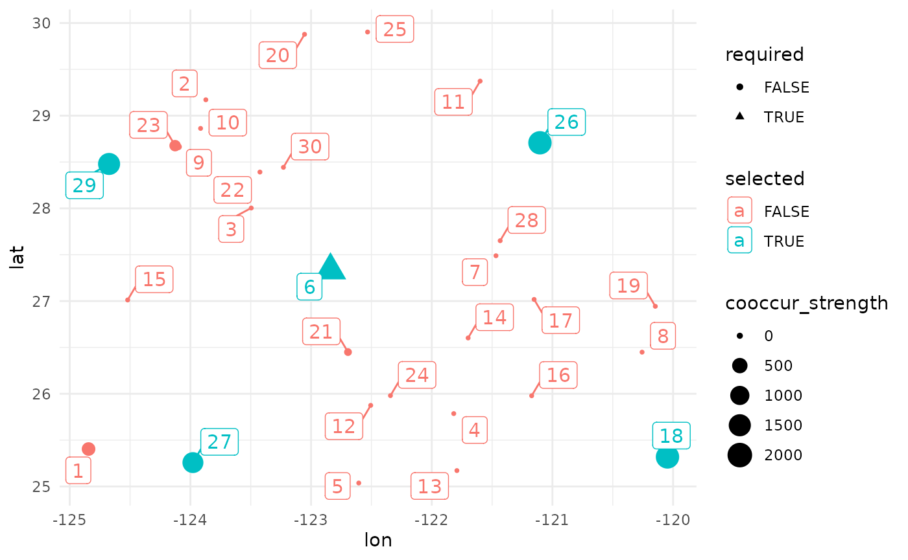
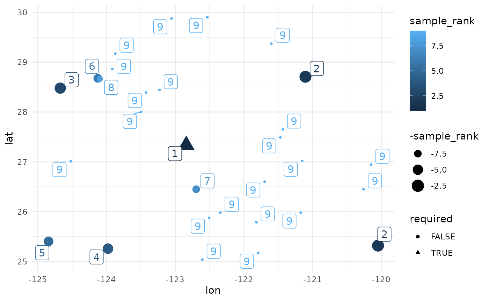

Rare Species Sampling Schema
RareSpecies.Rmd
n_sites <- 30 # number of known populations
df <- data.frame(
site_id = seq_len(n_sites),
lat = runif(n_sites, 25, 30), # play with these to see elongated results.
lon = runif(n_sites, -125, -120),
required = FALSE,
coord_uncertainty = 0
)
# the function relies on at least one required point. here arbitrarily place near geographic center
dists2c <- greatCircleDistance(
median(df$lat),
median(df$lon),
df$lat,
df$lon
)
df[order(dists2c)[1],'required'] <- TRUE
## we will simulate coordinate uncertainty on a number of sites.
uncertain_sites <- sample(setdiff(seq_len(n_sites), which(df$required)), size = min(6, n_sites-3))
df$coord_uncertainty[uncertain_sites] <- runif(length(uncertain_sites), 1000, 10000) # meters
# the function can take up to take matrices. the first (required) is a geographic distance
# matrix. calculate this with the `greatCircleDistance` fn from the package for consistency.
# (it will be recalculated during simulations). `sf` gives results in slightly diff units.
dist_mat <- sapply(1:nrow(df), function(i) {
greatCircleDistance(
df$lat[i], df$lon[i],
df$lat, df$lon
)
})
# the input data is a list, the distance matrix, and the df of actual point locations.
head(df)
#> site_id lat lon required coord_uncertainty
#> 1 1 25.40375 -124.8438 FALSE 9529.875
#> 2 2 29.17167 -123.8722 FALSE 0.000
#> 3 3 28.00380 -123.4958 FALSE 0.000
#> 4 4 25.78604 -121.8177 FALSE 0.000
#> 5 5 25.03700 -122.6049 FALSE 5020.322
#> 6 6 27.33197 -122.8391 TRUE 0.000
test_data <- list(distances = dist_mat, sites = df)
rm(dist_mat, df, n_sites, uncertain_sites, dists2c)
# small quick run (fast); timing for R package / CRAN status.
system.time(
res <- maximizeDispersion( ## reduce some parameters for faster run.
input_data = test_data,
lambda_var = 0.2,
n_bootstrap = 500,
objective = "maxmin",
n_local_search_iter = 50,
n_restarts = 2
)
)
#> Sites: 30 | Seeds: 1 | Requested: 5 | Coord. Uncertain: 6 | BS Replicates: 500
#> | | | 0% | | | 1% | |= | 1% | |= | 2% | |== | 2% | |== | 3% | |=== | 4% | |=== | 5% | |==== | 5% | |==== | 6% | |===== | 7% | |===== | 8% | |====== | 8% | |====== | 9% | |======= | 9% | |======= | 10% | |======= | 11% | |======== | 11% | |======== | 12% | |========= | 12% | |========= | 13% | |========== | 14% | |========== | 15% | |=========== | 15% | |=========== | 16% | |============ | 17% | |============ | 18% | |============= | 18% | |============= | 19% | |============== | 19% | |============== | 20% | |============== | 21% | |=============== | 21% | |=============== | 22% | |================ | 22% | |================ | 23% | |================= | 24% | |================= | 25% | |================== | 25% | |================== | 26% | |=================== | 27% | |=================== | 28% | |==================== | 28% | |==================== | 29% | |===================== | 29% | |===================== | 30% | |===================== | 31% | |====================== | 31% | |====================== | 32% | |======================= | 32% | |======================= | 33% | |======================== | 34% | |======================== | 35% | |========================= | 35% | |========================= | 36% | |========================== | 37% | |========================== | 38% | |=========================== | 38% | |=========================== | 39% | |============================ | 39% | |============================ | 40% | |============================ | 41% | |============================= | 41% | |============================= | 42% | |============================== | 42% | |============================== | 43% | |=============================== | 44% | |=============================== | 45% | |================================ | 45% | |================================ | 46% | |================================= | 47% | |================================= | 48% | |================================== | 48% | |================================== | 49% | |=================================== | 49% | |=================================== | 50% | |=================================== | 51% | |==================================== | 51% | |==================================== | 52% | |===================================== | 52% | |===================================== | 53% | |====================================== | 54% | |====================================== | 55% | |======================================= | 55% | |======================================= | 56% | |======================================== | 57% | |======================================== | 58% | |========================================= | 58% | |========================================= | 59% | |========================================== | 59% | |========================================== | 60% | |========================================== | 61% | |=========================================== | 61% | |=========================================== | 62% | |============================================ | 62% | |============================================ | 63% | |============================================= | 64% | |============================================= | 65% | |============================================== | 65% | |============================================== | 66% | |=============================================== | 67% | |=============================================== | 68% | |================================================ | 68% | |================================================ | 69% | |================================================= | 69% | |================================================= | 70% | |================================================= | 71% | |================================================== | 71% | |================================================== | 72% | |=================================================== | 72% | |=================================================== | 73% | |==================================================== | 74% | |==================================================== | 75% | |===================================================== | 75% | |===================================================== | 76% | |====================================================== | 77% | |====================================================== | 78% | |======================================================= | 78% | |======================================================= | 79% | |======================================================== | 79% | |======================================================== | 80% | |======================================================== | 81% | |========================================================= | 81% | |========================================================= | 82% | |========================================================== | 82% | |========================================================== | 83% | |=========================================================== | 84% | |=========================================================== | 85% | |============================================================ | 85% | |============================================================ | 86% | |============================================================= | 87% | |============================================================= | 88% | |============================================================== | 88% | |============================================================== | 89% | |=============================================================== | 89% | |=============================================================== | 90% | |=============================================================== | 91% | |================================================================ | 91% | |================================================================ | 92% | |================================================================= | 92% | |================================================================= | 93% | |================================================================== | 94% | |================================================================== | 95% | |=================================================================== | 95% | |=================================================================== | 96% | |==================================================================== | 97% | |==================================================================== | 98% | |===================================================================== | 98% | |===================================================================== | 99% | |======================================================================| 99% | |======================================================================| 100%
#> user system elapsed
#> 2.253 0.017 2.270
## first selected
ggplot(data = res$input_data,
aes(
x = lon,
y = lat,
shape = required,
size = cooccur_strength,
color = selected
)
) +
geom_point() +
ggrepel::geom_label_repel(aes(label = site_id), size = 4) +
theme_minimal() +
labs(main = 'Priority Selection Status of Sites')
#> Ignoring unknown labels:
#> • main : "Priority Selection Status of Sites"
## order of sampling priority ranking plot.
ggplot(data = res$input_data,
aes(
x = lon,
y = lat,
shape = required,
size = -sample_rank,
color = sample_rank
)
) +
geom_point() +
ggrepel::geom_label_repel(aes(label = sample_rank), size = 4) +
theme_minimal() 